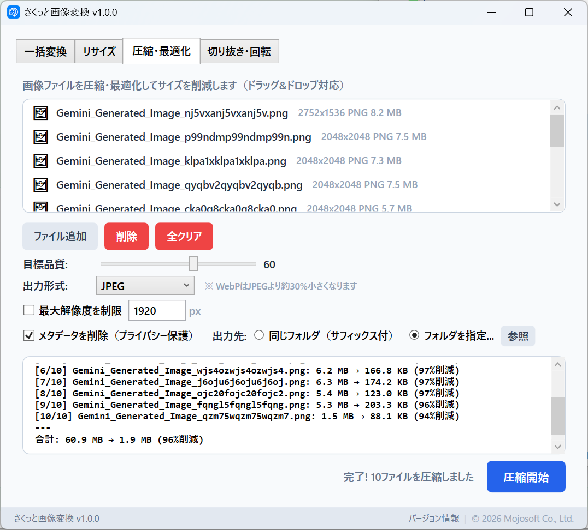
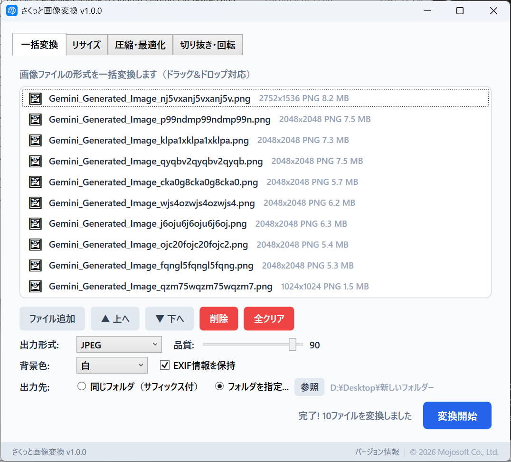
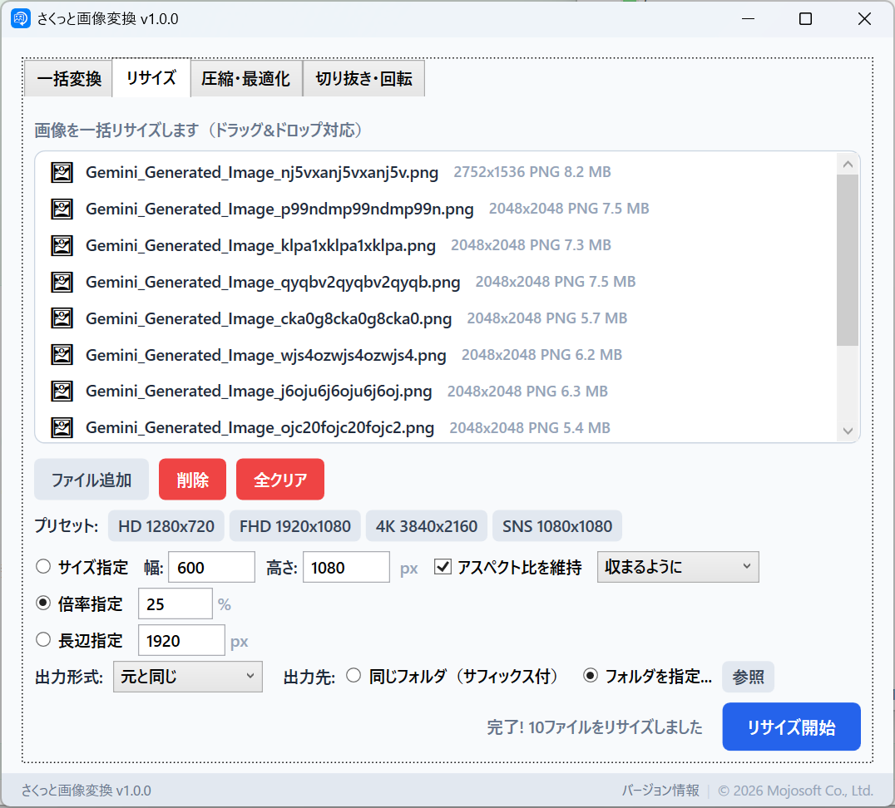
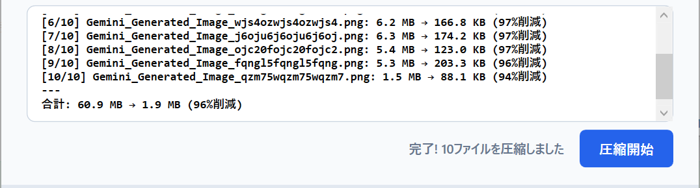

v1.1.0
- HEIC / HEIF / AVIF 画像の読み込みに対応しました（Windows の「HEIF 画像拡張機能」などを利用します。入っていない場合は案内を表示します）
- 保存するファイル名の先頭・末尾に付ける文字を、自由に設定できるようにしました（一括変換・リサイズ・圧縮の各タブ）
- 保存するファイル名の一部を置き換えられるようにしました
- 画像処理ライブラリを更新しました
PNG・JPEG・WebP、iPhone の写真（HEIC）まで、何枚でもドラッグ＆ドロップ。形式の変換、大きさの変更、ファイルの圧縮、切り抜き・回転が、このアプリひとつでできます。処理はすべて PC の中で行います。

アプリの画面で、印を付けた行の記録です。
AI で作った PNG 画像 10 枚を、JPEG（品質 60）にしたときの結果です。どれだけ小さくなるかは、画像と設定によって変わります。
Microsoft Store から購入して、すぐに使えます。アプリのアカウント登録はいりません。
まず画像を入れる
画像ファイルをドラッグ＆ドロップ。何枚でもまとめて入れられます。PNG・JPEG・WebP のほか、iPhone の写真（HEIC）や AVIF も読み込めます。

つぎに仕上がりを選ぶ
形式・大きさ・画質を選びます。リサイズは「幅と高さ」「倍率」「長い辺」の 3 通り。HD・フル HD・4K・SNS（1080×1080）のプリセットもあります。

あとは開始を押す
新しいファイルとして保存するので、元の画像はそのまま残ります。圧縮では、1 枚ごとに何 % 小さくなったかと、その合計を確かめられます。

よく使う 4 つの作業を、タブを切り替えるだけで。
PNG・JPEG・WebP・BMP・TIFF・GIF のどれにでも、まとめて変換します。
大きさをそろえて、まとめて縮小・拡大します。
画質を選んで、ファイルを小さくします。
マウスで範囲を選んで切り抜き。回転・反転もボタンひとつ。
HEIC・HEIF・AVIF の画像を読み込んで、JPEG などに変換できます。
保存するファイルの名前を、一度に付け直せます。
「簡単にリサイズできます」
Microsoft Store のレビューより（2026 年 5 月）。このレビューでいただいたファイル名のご要望は、v1.1.0 で実装しました。
お手元の画像ファイルを、使いたい形・大きさにそろえます。
パソコンに取り込んだ HEIC の写真を、どこでも開ける JPEG に一括変換できます。
長い辺を 1200 px や 1920 px にそろえて、WebP や JPEG で書き出せます。ページに載せる画像を軽くできます。
何 MB もある画像を、まとめて数百 KB に。上の例では、6.2 MB の画像が 166.8 KB になりました。
圧縮するときに、写真の EXIF 情報（撮影場所・日時など）を削除できます。SNS に載せる前に。
オンラインの変換サイトと違い、画像をどこかにアップロードすることはありません。
開発元（Mojosoft）に画像やファイル名が送られることはありません。アカウント登録も、利用状況の収集もありません。詳しくは プライバシーポリシー をご覧ください。
よく使われる画像の形式を、そのまま読み込めます。
| 読み込める画像 | PNGJPEGWebPGIFBMPTIFFHEICHEIFAVIFHEIC・HEIF・AVIF は、Windows の拡張機能を使って読み込みます（「HEIF 画像拡張機能」〈無料〉。iPhone の HEIC には「HEVC ビデオ拡張機能」〈有料〉、AVIF には「AV1 Video Extension」〈無料〉も必要です）。アニメーション GIF は、最初のコマを変換します。 |
|---|---|
| 書き出せる形式 | 一括変換: PNGJPEGWebPBMPTIFFGIF リサイズ: 元と同じ形式・PNG・JPEG・WebP 圧縮・最適化: 元と同じ形式・JPEG・WebP 切り抜き・回転: PNG・JPEG・WebP・BMP・TIFF |
| 保存先と名前 | 元と同じフォルダ（名前の末尾に「_converted」などを付けて）、または指定したフォルダ。先頭・末尾に付ける文字と、置き換える文字は自由に変えられます。 |
| 表示言語 | 日本語・英語（Windows の言語設定に合わせて切り替わります） |
| 動作環境 | Windows 10（バージョン 2004）以降・64 ビット |
はい。「一括変換」に入れて JPEG を選ぶだけです。Windows に Microsoft の「HEIF 画像拡張機能」と「HEVC ビデオ拡張機能」が入っていれば読み込めます。入っていない場合は、アプリが Microsoft Store のページを案内します。
はい。ファイルをまとめて選ぶか、ドラッグ＆ドロップで入れれば、順番に自動で処理します。
はい。一括変換・リサイズ・圧縮では、新しいファイルとして保存します。同じ名前のファイルがあるときは「_1」などの番号を付けるので、上書きしません。
はい。「圧縮・最適化」で「メタデータを削除」をオンにすると、EXIF 情報（撮影日時・カメラの機種・位置情報など）を消して保存します。
はい。「一括変換」では、透明な部分を選んだ背景色（白・黒・好きな色）で塗って保存します。
はい。先頭や末尾に文字を付けたり、元の名前の一部を別の文字に置き換えたりできます。設定は次に起動したときも残ります。
はい。画像の読み込みから保存まで、すべて PC の中で行います。
はい。Microsoft Store で一度購入すれば、月額料金なしで使い続けられます。
Microsoft Store 版は自動で最新版に更新されます。